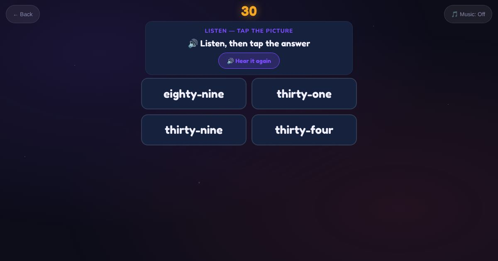

For teachers and tutors
About Numbers 21 to 99
A spelling game for two-digit number words, like twenty-one, forty-two and ninety-nine. Learners practise the tens words and the hyphen, which they need for forms and for writing amounts in words.

How to play
- Listen to the number.
- Type the number word.
- Check it.
Play it as a class
Choose Numbers 21 to 99 in the Teacher Game.